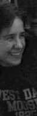
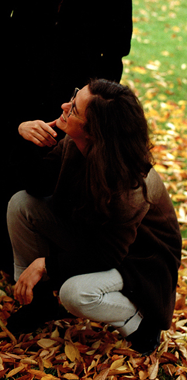

Once upon a time, I made a website. It was called Cecca is Stupid because I was 14, insecure, and thought self-deprecation was funny. Maybe I still do.


Twenty years later, some things have changed; other things have not changed.
I graduated from high school.
I still love Talking Heads.
I graduated from college.
I still eat too much sugar.
I graduated from graduate school.
I still like to dance.
I accrued a lot of student debt.
I still worry about money.
I learned about "growth mindset" and "fixed mindset."
I still spend most of my time in classrooms.
I cut myself a little more slack.
I still don't know what I'm gonna do when I grow up.
Learning to code again in 2019, I've uploaded several class exercises to git hub. Here are links to some of those repositories.